indent 很好用zc、zo 是打开关闭当前行zm、zr 可以改变foldlevel{range}:{range}foldopen! 可以在范围内打开行:{range}foldclose! 可以在范围内关闭行mkview可以创造一个视图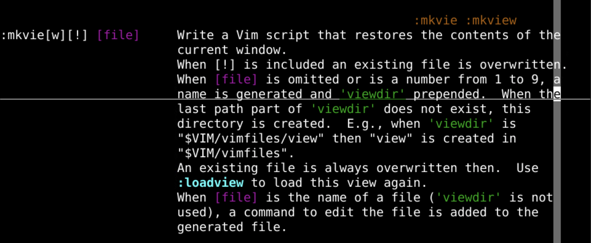
viewdiroption 的位置:set viewdir?$VIM/vimfiles/view 下面:!ls $VIM/vimfiles/view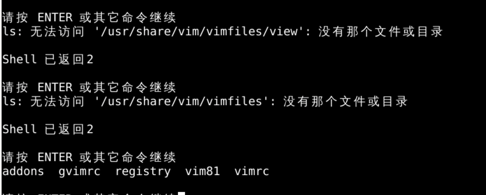
:mkviewoeasy.java 来 mkview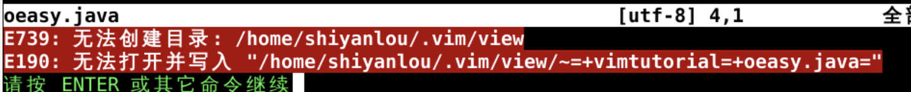
:!mkdir -p ~/.vim/view/mkdir -p 是建立相应的文件夹 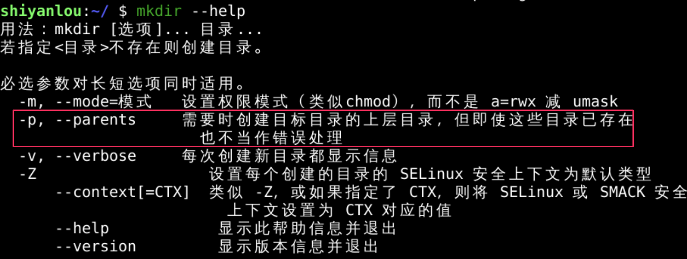
~/.vim/ 是 当前用户 对应的vim配置文件夹/usr/share/vim/vim81 是 系统共享 vim配置文件夹:mkview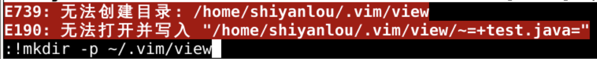
:!ls ~/.vim/view/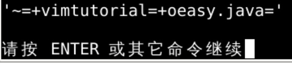
:!ls ~/.vim/view/:!vi ~/.vim/view/+tab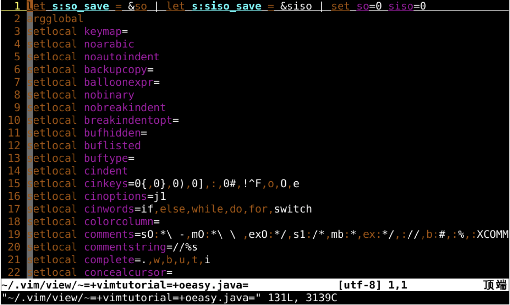
vim文件~/.vimrc一样~/.vimrc是当前用户的vim配置 ~/.vim/view/XXX.vim 是当前窗口 make的 viewoptionlocal 的 option 到当前 window:setlocal ...=...window窗口 有用:set ...对所有窗口有用8,20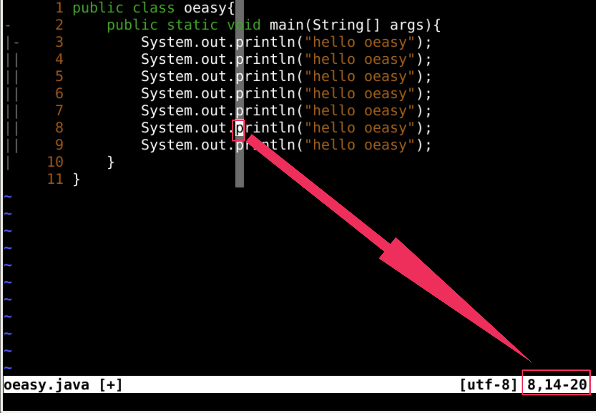
:mkview:set foldcolumn=4:set foldmethod=indentgg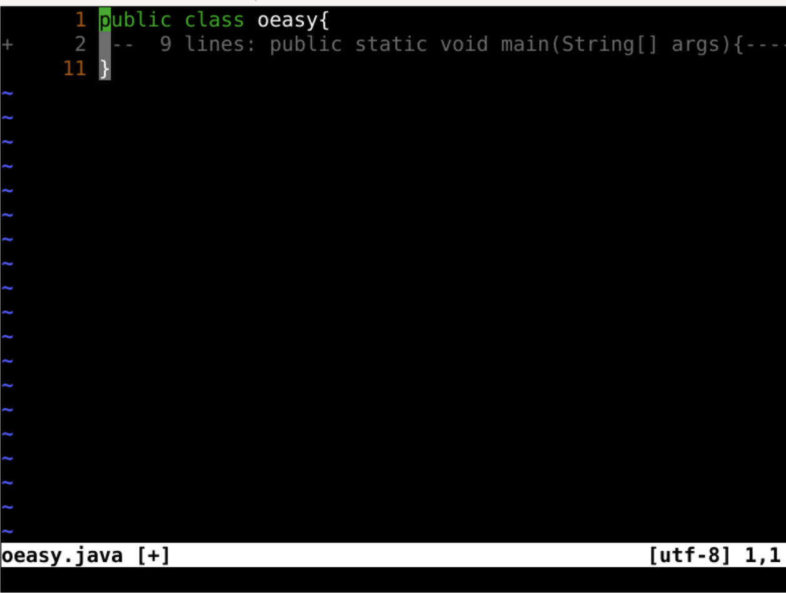
:loadview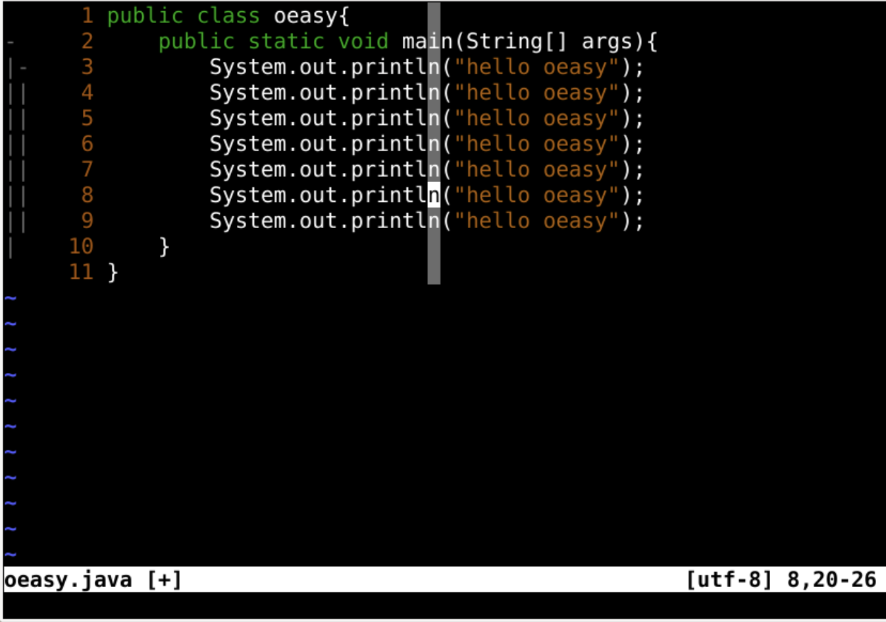
localoption 之外view 中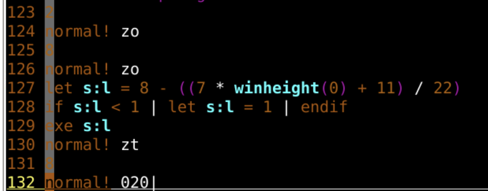
oeasy.javaloadview么？oeasy.java:loadview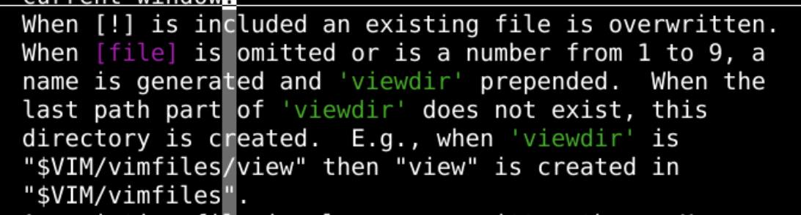
(8,20)statusline 里面的 ruler 中找到view:mkview:mkview 1 :loadview:loadview 1ma也能做到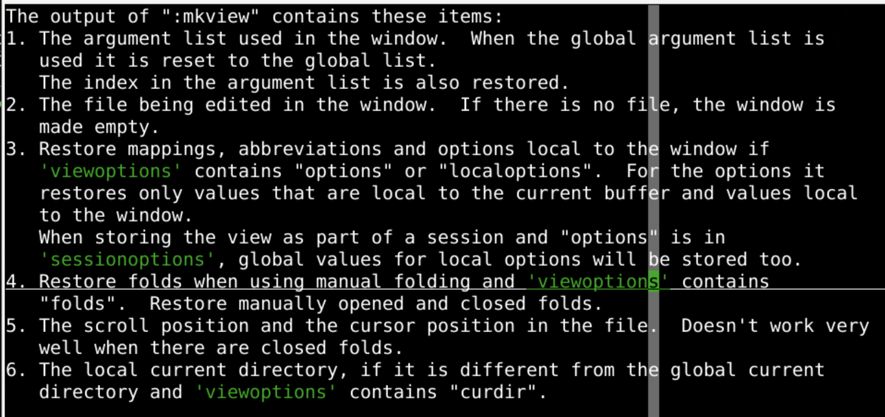
:args，包括索引顺序abbreviations)mappings)fold)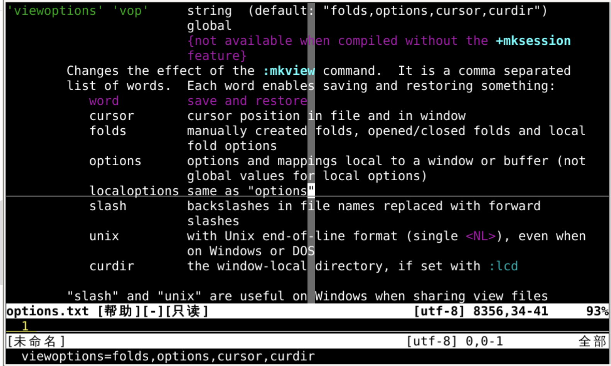
:h viewoptions可以看到view保存内容的选项:set viewoptions?:set viewoptions=folds,options,cursor,curdircurdir指的是当前路径:view .的时候可以明确相对路径view 保存了好多配置信息:mkview、:loadviewviewoption 中配置保存选项，设置哪些需要保存abbreviations)和映射(mappings)呢？🤔